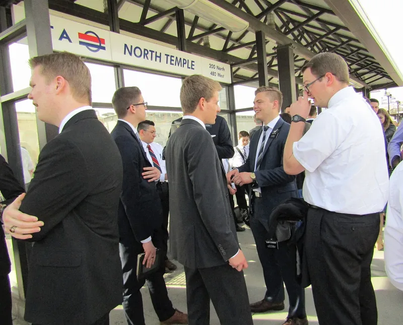
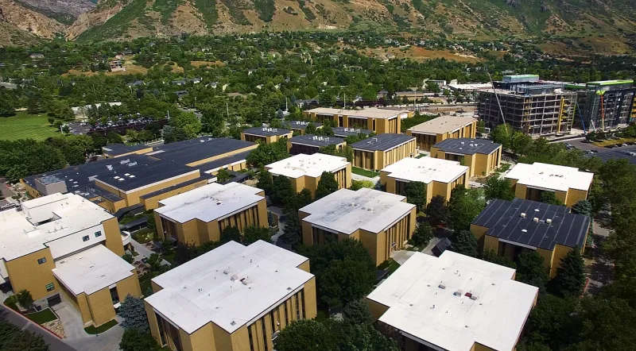

Moroni 10:4: a feeling as the test of truth
UnrefutedNo good counter-argument has been published by LDS scholars.
The evidence
How the whole system is entered
Moroni 10:4-5. Pray about the Book of Mormon, and the Holy Ghost will confirm that it is true.
It is experienced as a feeling — the burning in the bosom of D&C 9:8. Dallin Oaks describes it as a feeling of comfort and serenity.
Alma 32:27-28 sets up the same experiment.
What the feeling then carries
Everything. Members are taught this witness outranks outside evidence.
Once confirmed, it validates the whole chain: the book, the prophet, the priesthood, the church.
The first problem
The method cannot tell things apart. Muslims report it.
Catholics report it. Evangelicals report it.
So do Strangites, who follow a rival successor to Joseph Smith. The claims contradict each other, so at most one set of feelings is tracking truth.
The second problem
Scripture puts the test the other way round. Deuteronomy 13:1-3 says reject a prophet whose doctrine is false, even if his sign comes to pass.
1 John 4:1 says "try the spirits." Isaiah 8:20 says "to the law and to the testimony." The Bereans in Acts 17:11 "searched the scriptures daily, whether those things were so." And Jeremiah 17:9 says the heart is deceitful above all things.
Their answer, at full strength
FAIR argues that personal revelation is thoroughly biblical. James 1:5 says ask of God.
Hearts burned on the Emmaus road in Luke 24:32. Peter's testimony came "not by flesh and blood" in Matthew 16:17.
The witness is knowledge borne by the Spirit, not raw emotion, and D&C 9:8 commands study first, so feeling confirms work rather than replacing it. Other faiths having spiritual experiences is expected, since God gives light to all.
And critics who reduce every spiritual experience to brain chemistry prove too much, because that would undo Christian conversion too.
What to say
"A Muslim prays and feels the same certainty. How would either of you tell?"



How they answer this — at its strongest
Asking God is biblical. James 1:5 says ask, and the two on the road felt it.
FAIR argues that personal revelation is thoroughly biblical. 'Ask of God', says James 1:5. Hearts burned on the Emmaus road, in Luke 24:32. Peter's testimony came 'not by flesh and blood', in Matthew 16:17.
The witness is not raw emotion. It is knowledge borne by the Spirit. And D&C 9:8 commands study first, so the feeling confirms the work rather than replacing it.
Other faiths having spiritual experiences is to be expected, since God gives light to all people. Such experiences may soften a heart toward God in general, without tying a person to one specific claim.
And critics who reduce every spiritual experience to brain chemistry prove too much. That would undo Christian conversion too.
The verdict
Strong for you: their own answer grants a feeling may not tie you to one claim.
Their reply defends the claim that God can speak, and the Christian gladly grants it. It never answers the actual objection. How does a feeling tell true claims from false ones, when religions that contradict each other produce the same feeling?
FAIR makes one concession that costs a great deal. It grants that spiritual experiences may not tie a person to one specific claim. That is exactly the use Moroni 10:4 is put to. The missionary programme treats the feeling as certifying a whole set of very specific claims.
And Deuteronomy 13:1-3 shuts the move off in principle. Even a real supernatural sign must yield to testing by doctrine.
This is arguably the keystone case. Every other entry here can be waved off by appeal to the testimony this method produces.
Sources
- FAIR: Holy Ghost — Burning in the bosom
- FAIR: Moroni's promise of the Book of Mormon
- MormonThink: Mormon Testimony & Spiritual Witnesses
- Midwest Christian Outreach: Examining the Faulty Logic of Moroni 10:4
- wasmormon.org: Moroni's Promise and Begging the Question